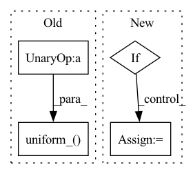

Pattern ID :40804

Before Change
initrange = 0.1
self.encoder.weight.data.uniform_(-initrange, initrange)
self.decoder.bias.data.fill_(0)
self.decoder.weight.data.uniform_(-initrange, initrange)
def forward(self, input, hidden, return_h=False):
emb = embedded_dropout(self.encoder, input, dropout=self.dropoute if self.training else 0)
//emb = self.idrop(emb)
After Change
// self.decoder.bias.data.fill_(0)
// self.decoder.weight.data.uniform_(-initrange, initrange)
for name, param in self.named_parameters():
if "weight_hh" in name:
nn.init.orthogonal_(param.data)
elif "weight_ih" in name:
nn.init.xavier_uniform_(param.data)
elif "bias" in name:
nn.init.zeros_(param.data)
param.data[self.nhid:2 * self.nhid] = 1
def forward(self, input, hidden, return_h=False, lengths=None):
// emb = embedded_dropout(self.encoder, input, dropout=self.dropoute if self.training else 0)
In pattern: SUPERPATTERN
Frequency: 3
Non-data size: 4
Instances
Fragment ID: 115184797
Project Name: mourga/variational-lstm
Commit Name: 59c63b2394f0b42455673363b2acdb29446bd78b
Time: 2020-02-05
Author: katerina.margatina@gmail.com
File Name: rnn_model.py
M Class Name: RNNModel
N Class Name: RNNModel
M Method Name: init_weights(1)
N Method Name: init_weights(1)
M Parent Class: nn.Module
N Parent Class: nn.Module
M File Name: rnn_model.py
N File Name: rnn_model.py
M Start Line: 81
M End Line: 84
N Start Line: 72
N End Line: 81
'>
Before Change
batch_size, n_tokens = positions.shape
delta = torch.FloatTensor(batch_size, 1).uniform_(-self.max_global_shift, self.max_global_shift).to(positions.device)
if self.max_local_shift:
delta_local = torch.FloatTensor(batch_size, n_tokens).uniform_(-(self.pos_scale*self.max_local_shift) / 2.0, (self.pos_scale*self.max_local_shift) / 2.0).to(positions.device)
else:
delta_local = 0
log_lambdas = torch.FloatTensor(batch_size, 1).uniform_(-math.log(self.max_global_scaling), math.log(self.max_global_scaling)).to(positions.device)
After Change
self.max_global_shift)
delta = delta.to(positions.device)
if self.max_local_shift:
epsilon = self.pos_scale * self.max_local_shift
delta_local = torch.FloatTensor(batch_size, n_tokens)
delta_local = delta_local.uniform_(-epsilon / 2.0,
epsilon / 2.0)
delta_local = delta_local.to(positions.device)
'>
Fragment ID: 115184796
Project Name: gcambara/cape
Commit Name: 58947c7941cf62d77a4ed713cf6a0e17af62cdda
Time: 2021-11-19
Author: guillermocambara@gmail.com
File Name: cape/cape.py
M Class Name: CAPE1d
N Class Name: CAPE1d
M Method Name: _augment_positions(2)
N Method Name: _augment_positions(2)
M Parent Class: nn.Module
N Parent Class: nn.Module
M File Name: cape/cape.py
N File Name: cape/cape.py
M Start Line: 51
M End Line: 56
N Start Line: 56
N End Line: 72
'>
Before Change
new_bias = torch.empty(n_classes_to_add)
fan_in, _ = nn.init._calculate_fan_in_and_fan_out(self.output_layer.weight)
bound = 1 / math.sqrt(fan_in) if fan_in > 0 else 0
nn.init.uniform_(new_bias, -bound, bound)
self.output_layer.bias = nn.parameter.Parameter(
torch.cat([self.output_layer.bias, new_bias], axis=0)
)
self.output_layer.out_features += n_classes_to_add
After Change
Number of output dimensions to add.
new_weights = torch.mean(self.output_layer.weight,dim=0).unsqueeze(1).T
if n_classes_to_add > 1:
new_weights = new_weights.unsqueeze(1).T.repeat(1,n_classes_to_add, 1).squeeze()
self.output_layer.weight = nn.parameter.Parameter(
torch.cat([self.output_layer.weight, new_weights], axis=0)
)
'>
Fragment ID: 115184769
Project Name: online-ml/river-torch
Commit Name: 27f914a787bc844de5af4720487e2314f206960d
Time: 2022-09-26
Author: cedric.kulbach@googlemail.com
File Name: river_torch/classification/classifier.py
M Class Name: Classifier
N Class Name: Classifier
M Method Name: _add_output_features(2)
N Method Name: _add_output_features(2)
M Parent Class: DeepEstimator,base.Classifier
N Parent Class: DeepEstimator,base.Classifier
M File Name: river_torch/classification/classifier.py
N File Name: river_torch/classification/classifier.py
M Start Line: 300
M End Line: 310
N Start Line: 300
N End Line: 311